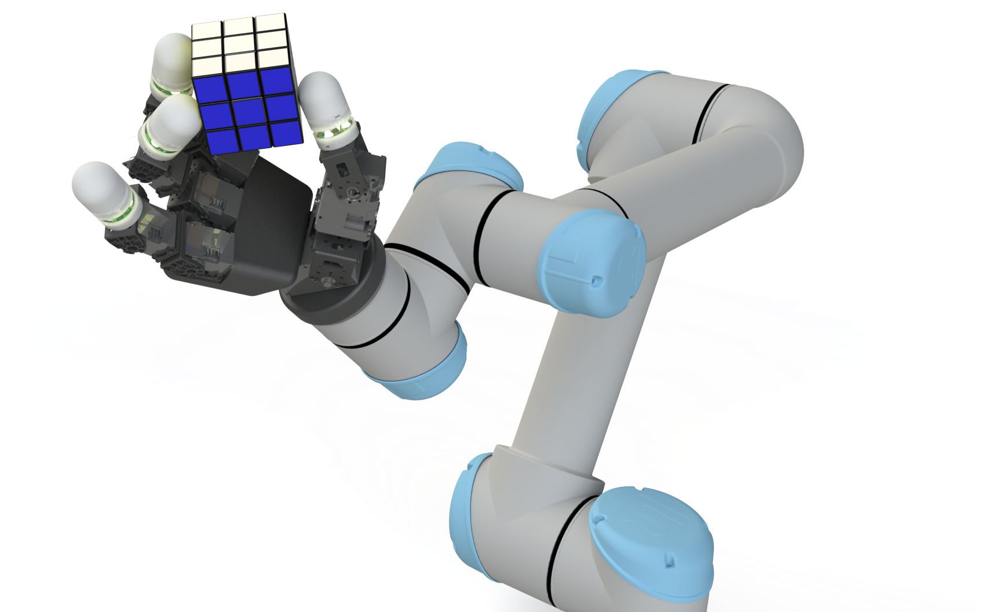
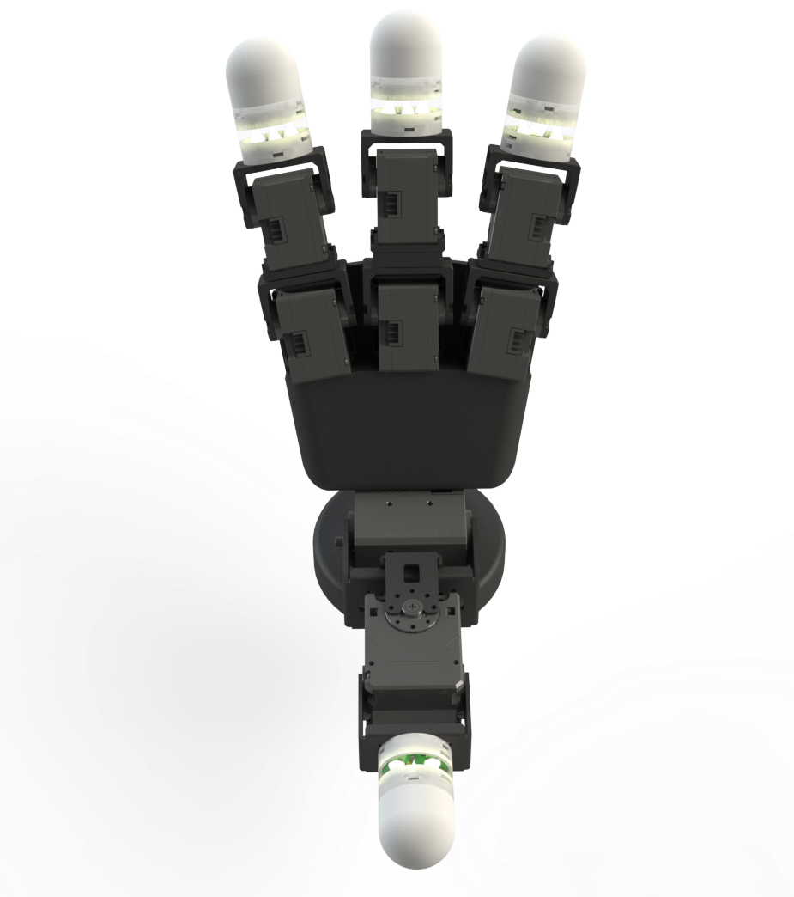
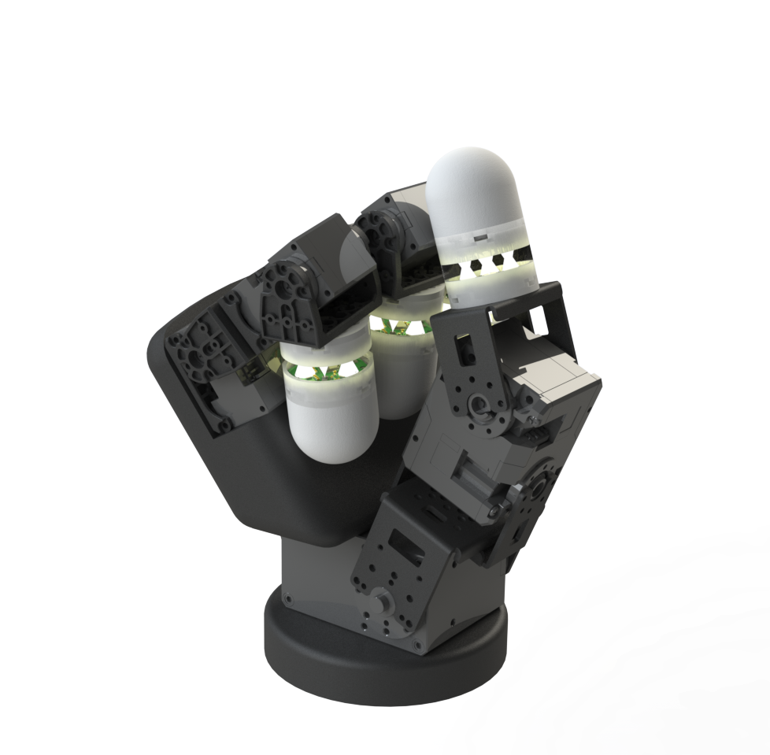
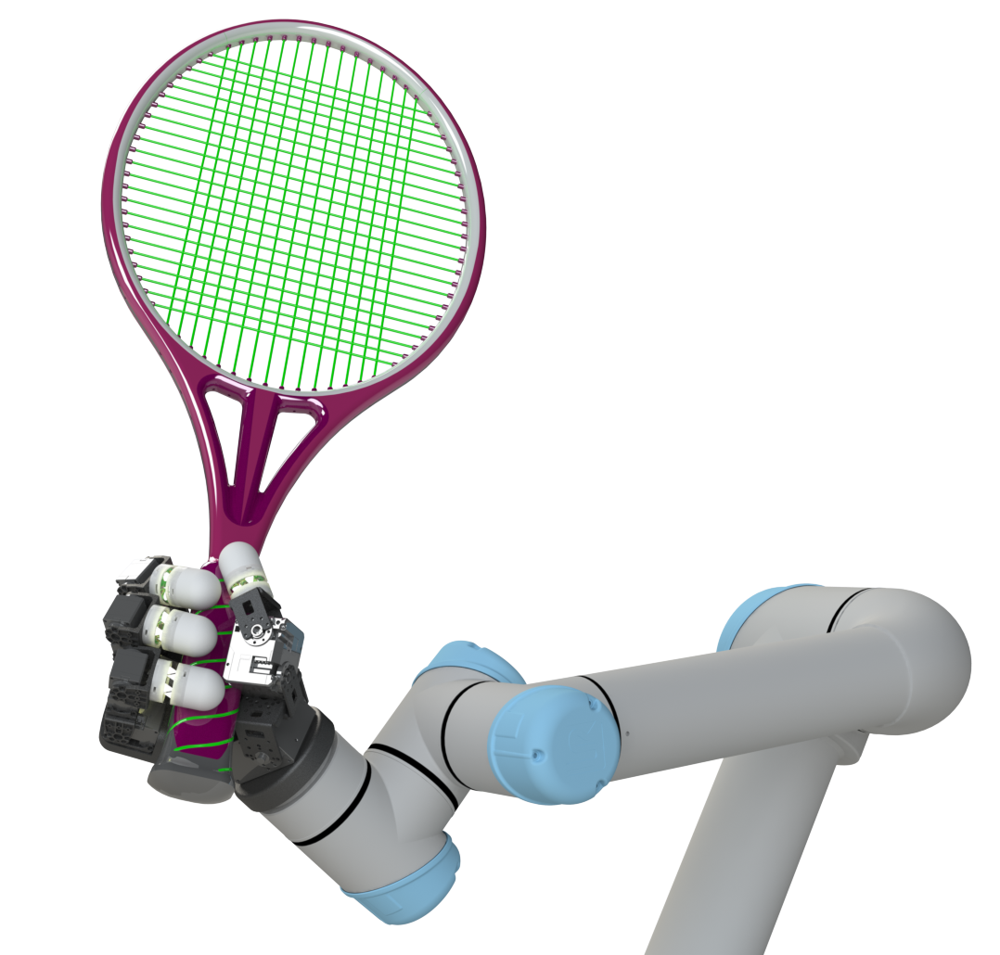
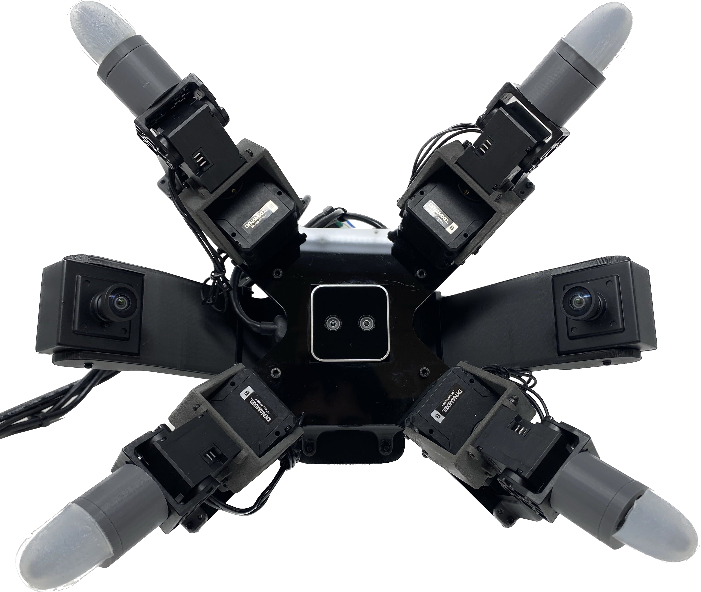
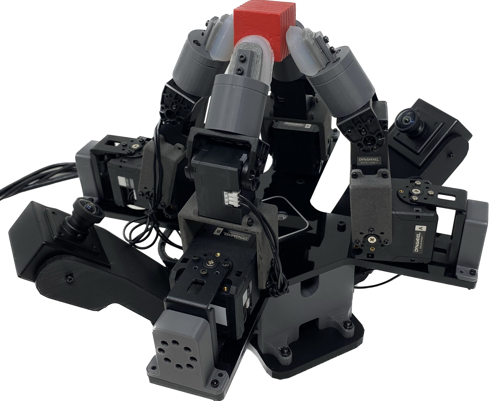

ROAM Hand 3

Robot hand with 6-axis F/T sensorized fingertips and novel kinematics validated via RL policies.
Description:
Iterative design cycle with robot learning in-the-loop to develop a novel dexterous robot hand. Validating kinematics by training dexterous in-hand manipulation skills via Reinforcement Learning.
6 Axis Force/Torque sensorized fingertip development is being led by collaborators Amr El-Azizi, Sharfin Islam, and Pedro Piacenza.
As seen in: Wall Street Journal (2025)
Anthropomorphic Hand (RH3-A)



Non-Anthropomorphic Hand (RH3-NA)

